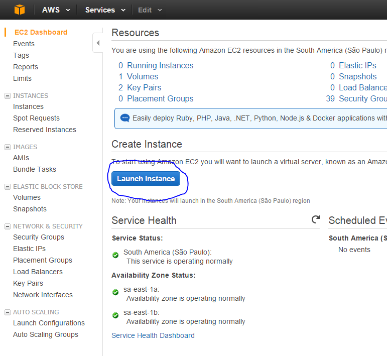
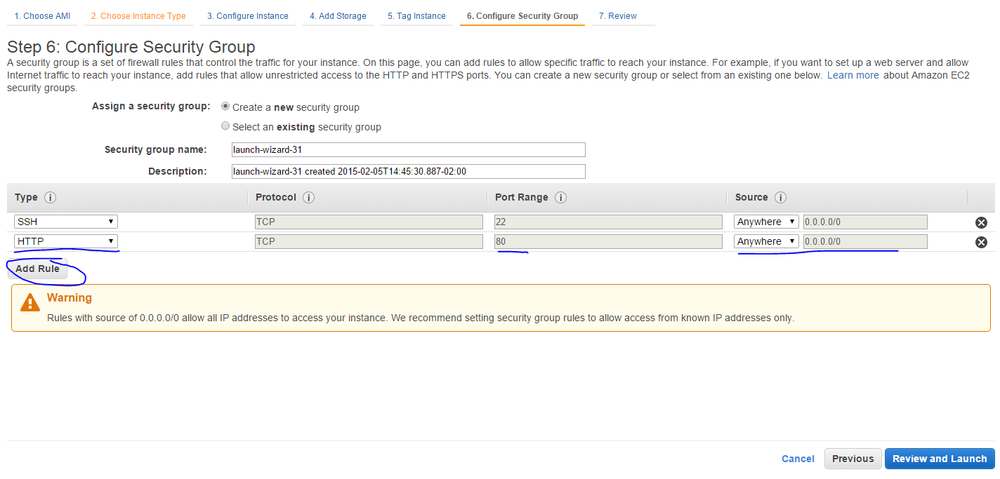
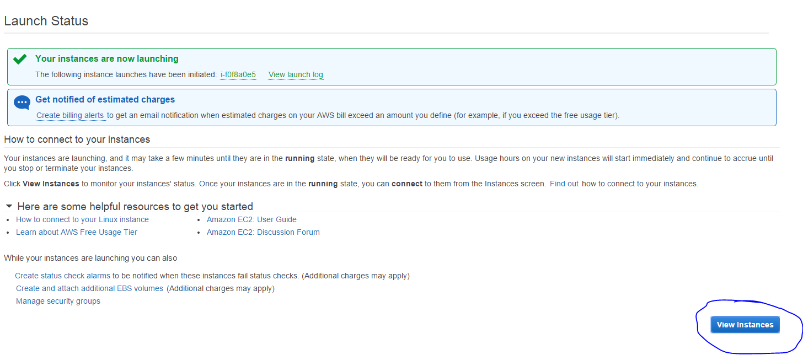
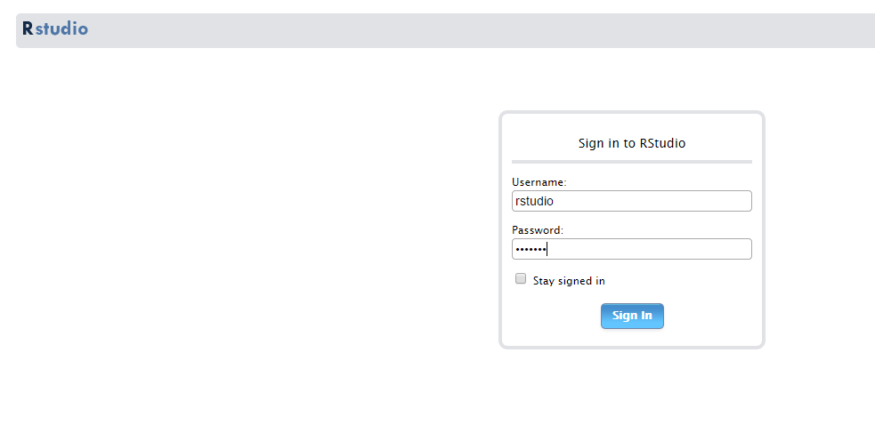

-
Como criar uma instância com Rstudio instalado na Amazon EC2
2015-02-05
Source1. Criar uma conta na Amazon
Entre no site da (Amazon Aws)[http://aws.amazon.com/pt/] e crie uma conta.
2. Fazer login e ir para o AWS Management Console

Clique em EC2 (Elastic Compute Cloud), este é o serviço que usamos quando queremos criar um computador na nuvem.
3. No Dashboard do EC2 clique em Launch Instance

4. Clique em Community AMI's e procure por RStudio

Selecione a primeira, que é a mias atualizada, e clique em Select
5. Selecione o tamanho da sua instância

Clique em Next: Configure Instance Details no canto direito inferior para continuar.
6. Aqui são opções mais avançadas...

Apenas clique em Next: Add Storage para continuar.
7. Coloque a quantidade de espaço de HD que você precisa na sua instância

Esse é o tamanho do disco rígido da sua máquina, ele precisa comportar a sua base e todos os arquivos que você precisar salvar.
Clique em Next: Tag Instance
8. Aqui você só precisa dar um nome para a sua instância

Clique em Next: Configure Security Group
9. Configurações de segurança da instância

Clique em Add Rule, em seguida "http". Assim você está liberando o acesso à sua instância pela porta Http. É recomendável trocar a opção "Anywhere" por "My Ip".
Clique em Review and Launch.
10. Verifique suas configurações e clique em Launch

11. A página a seguir aparecerá:

Clique em View Instances
12. Acessar a sua instância
Quando o estado da sua instância for "running" ela estará pronta, e terá um Public DNS.

Copie e cole o Public DNS no seu navegador, como se fosse um site que você deseja acessar.
13. Se tudo estiver correto...

O Rstudio aparecerá. O login é rstudio e a senha também.
14. Para parar de pagar pela instância:
Selecione a instância, clique em actions, Instance State, Terminate. Isso desligará o servidor e você perderá tudo que tem nele. Se você clicar em stop, você não perderá o que está armazenado na instância e poderá ligá-la a qualquer momento. No entanto estará pagando pelo armazenamento.